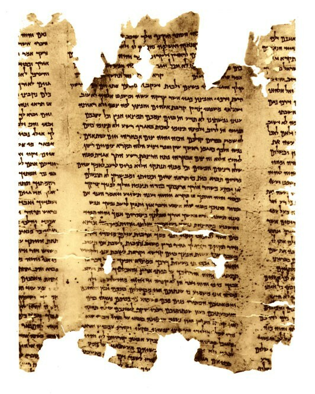

Isaiah Scroll (1QIsab)

- Category
- Biblical
- Cave
- Qumran Cave 1
- Completeness
- Substantial fragment
- Date Approx
- c. 100-50 BC
- Description
- The second Isaiah copy from Qumran Cave 1, also called the Hebrew University Isaiah Scroll. Found in 1947 and purchased by Eleazar Sukenik, it survives darkened and blackened in fragments and in four major sheets carrying the upper section of the last third of the book. Seven fragments of it are also classified as 1Q8. Palaeography dates it to the late Hasmonean or early Herodian period in the first century BC. It is a different manuscript from Batch 1's complete Great Isaiah Scroll (1QIsaa), not a duplicate of it. Publish-prep note: the research listed Isaiah 47:17-49:15 for column VI; Isaiah 47 has only 15 verses in the English KJV and in the Hebrew text, so that range cannot be resolved and is withheld from PreservedPassages pending verification against DJD 32. It is not converted to 48:17 or any other reading; that would be a guess.
- Language
- Hebrew
- Location
- Qumran, Judaean Desert
- Manuscript
- Isaiah Scroll (1QIsab)
- Manuscript ID
- 1QIsab / 1Q8
- Material
- Parchment
- Preserved Passages
- Related Books
- Script
- Square Hebrew
- Significance
- The second-most extensive Isaiah witness from Qumran after 1QIsaa: it preserves substantial portions of Isaiah 38-66 alongside scattered earlier passages, so the two Cave 1 copies can be compared against each other and against the Masoretic Text across most of the book.
- Work
- Isaiah
Awaiting Review Not yet checked against scholarly sources. Treat its claims as provisional until this entry is reviewed. About verification
Sources: https://en.wikipedia.org/wiki/1QIsab
https://en.wikipedia.org/wiki/List_of_manuscripts_from_Qumran_Cave_1
https://en.wikipedia.org/wiki/List_of_manuscripts_from_Qumran_Cave_1
Last reviewed: not yet reviewed